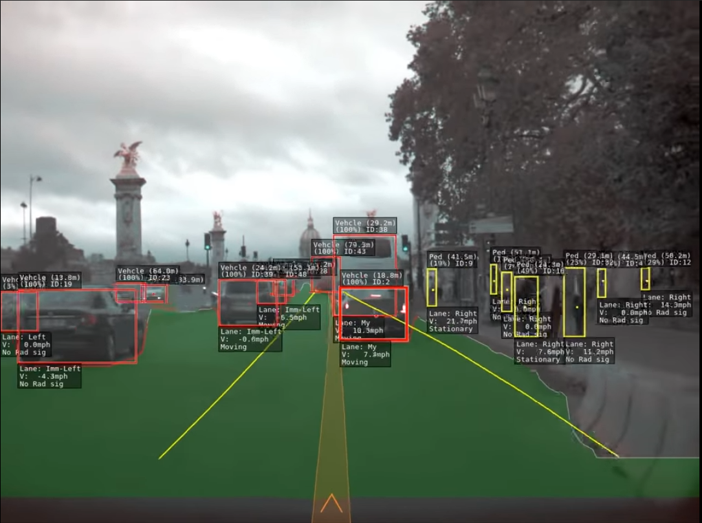

Tran Nam Thai
s3891890
An autonomous vehicle is defined as a vehicle that can drive itself from point A to point B using various technologies and sensors like cruise control, steer by wire, ABS, GPS, etc. Currently, the most advanced self-driving system in the world is the Full Self-Driving Tesla Autopilot. On the base Tesla model, they offer level 2 autonomous vehicles. By definition, a level 2 (hands-off) autonomous vehicle can drive itself under the driver’s supervise. At this level, Tesla claims on their website that:
“Autopilot enables your car to steer, accelerate and brake automatically within its lane.”[1]
This does not sound revolutionary or different from other companies at the first glance since this only means a Tesla can auto lane correct and avoid collisions. The real difference between Tesla and other automotive manufactures lies in the Full Self Driving (FSD) package. In addition to the base Tesla autopilot system, Tesla also offers customers FSD as an upgrade option when purchasing a vehicle. With this package, Tesla tried to achieve level 5 autonomous vehicles, in which the vehicle autonomously drives itself from point A to point B without the need for driver supervision.“ Full Self-Driving Capability introduces additional features and improves existing functionality to make your car more capable over time including: Navigation on Autopilot, Summon, Autopark, Auto Lane Change.” [1]
Paris streets in the eyes of Tesla Autopilot [6]
Tesla also includes active safety features in all Tesla. This package includes: Automatic Emergency Braking, Forward Collision Warning, Blind Spot Collision Warning, Lane Departure Avoidance. The Automatic Emergency Braking system has saved a lot of lives due to its incredible fast reaction time which humans cannot compare with.Right now, the automotive industry is trying to catch up with Tesla in self-driving software. Giants like General Motors (GM) and Mercedes are investing big money into developing their own self-driving systems. GM is investing in start-ups Cruise. Cruise is serving people in San Francisco, in a controlled environment like companies campus, schools, as autonomous taxis for a few years now. They are targeting to have a million autonomous cars by 2030. Mercedes is working with Nvidia on its self-driving system. They already have demos on closed track on their newest self-driving S-class Mercedes. Vietnamese automotive company Vinfast, although they are young compared to other giants, is also developing a self-driving system on their vehicle to fit the needs and conditions of the Vietnamese market.
Autonomous driving technology is thriving thanks to the development of its backbone technology recently: A.I and big data. In recent years, the development of A.I, specifically computer vision has allowed companies like Tesla to develop a state of the autonomous driving system. The development in hardware also accelerates the process. In 2019, Tesla put out their newest generation of computer system, the brain of the vehicle. The computer can perform 36 trillion operations per second, that is 36,000,000,000,000 operations per second [2]. Mercedes is cooperating with Nvidia, a giant in GPU hardware manufacture and A.I technology. Nvidia’s newest generation of GPU can perform 312 trillion operations [3], nearly 8.7 times more than Tesla’s computer. Although the unit is very power-consuming which might not fit for a vehicle, we can see how companies like Nvidia will help accelerate development in autonomous vehicles.
Autonomous vehicles can bring a lot of benefits to the world. For starters, autonomous cars can cause fewer accidents. Car accidents can be caused by a variety of factors, but the majority of them are caused by human errors like slow reaction time, distraction while driving. These human errors can easily be eliminated with autonomous technology. Furthermore, as the number of consumers rises, the technology became more mature. Tesla collects data from drivers in order to improve their software, and their Vehicle Safety Report is the most conclusive proof. According to the Tesla Vehicle Safety Report [4], in the second quarter of 2021, in the United States, there was a Tesla accident every 4.41 million miles driven, compared to an accident every 484,000 miles driven on average.
On the other hand, there are some drawbacks autonomous vehicles bring with them. People who make a living by driving cars, trucks, and buses may find themselves out of work if these vehicles begin to drive themselves. According to the United States Bureau of Labor Statistics, over 2.0 million people worked as tractor-trailer truck drivers in 2019 [5]. Taxi and delivery drivers employ 370,400 people, while bus drivers employ over 680,000 people in the United States. Taken together, this amounts to a potential job loss of more than 2.9 million, which is higher than the number of jobs lost during the Great Recession in 2008. When you factor in delivery and light truck drivers, the total number of jobs at risk rises to 4.5 million. It will be difficult for these workers to find new jobs quickly, and the cost of retraining them may be prohibitive.
From my point of view, this change will greatly benefit me in the future. Personally, my dream job is to work as a data scientist, and with the current rate of development, there will be plenty of job opportunities for me in the future. Vietnam is a thriving country in technology, I believe in the future, there will be more Vietnamese technology companies and start-ups working in this field. Apart from jobs, an autonomous vehicle would be extremely beneficial to me and my family. In Vietnamese culture, consuming alcohol is hard to avoid during special events like Tet Holiday or family gatherings. It would be dangerous if the driver is intoxicated and driving. An autonomous car would protect the driver and their family. People can drink and still get back home safely.
References
[1]: https://www.tesla.com/model3[2]: https://www.cnet.com/tech/computing/meet-tesla-self-driving-car-computer-and-its-two-ai-brains/
[3]: https://www.nvidia.com/content/dam/en-zz/Solutions/Data-Center/a100/pdf/nvidia-a100-datasheet.pdf
[4]: https://www.tesla.com/VehicleSafetyReport
[5]: https://www.bls.gov/ooh/transportation-and-material-moving/heavy-and-tractor-trailer-truck-drivers.html
[6]: https://www.youtube.com/watch?v=_1MHGUC_BzQ